Periode 2023-2025
| 1 | Kegiatan | Pelantikan IPNU&IPPNU KETAMBUL Periode 2023-2025 |
|---|---|---|
| Tema | - | |
| Tanggal | Sabtu, 06 Januari 2024 | |
| Gambar | 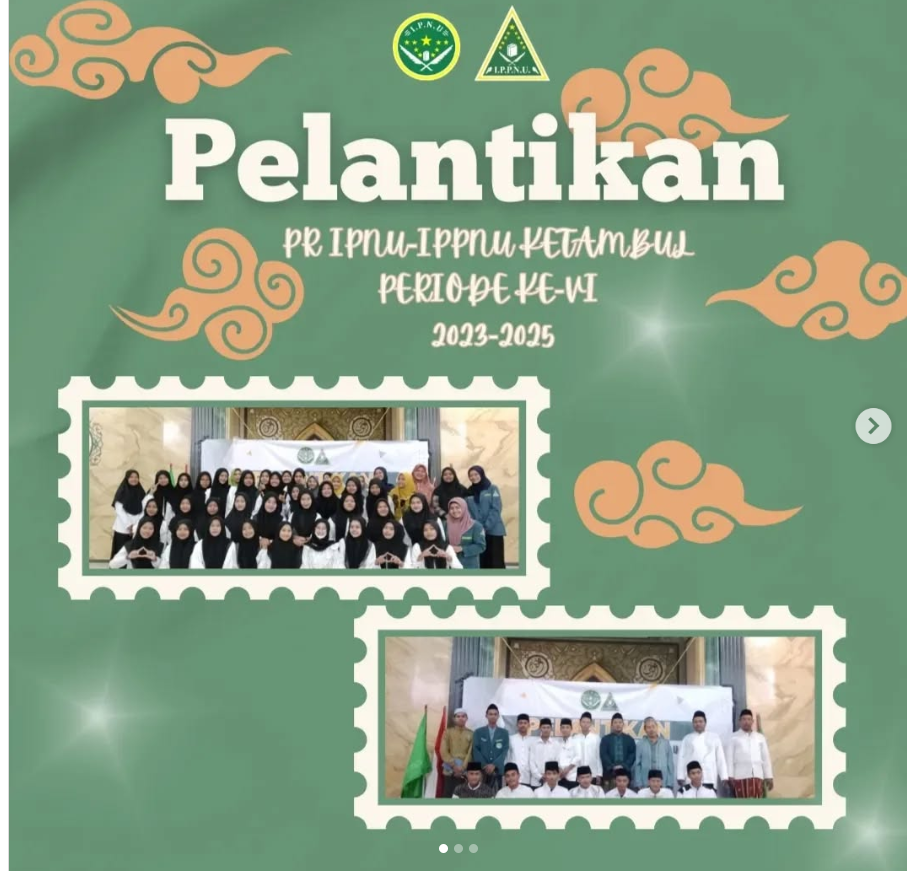 | |
| Tujuan | Sebagai peresmian secara simbolis masa periode baru | |
| Target | Seluruh anggota ipnu&ippnu pr Ketambul |
| 2 | Kegiatan | Kajian Memperingati Isra Mi'raj |
|---|---|---|
| Tema | Ngaji Noto Adab lan Ati Bareng Gus Huda | |
| Tanggal | Sabtu, 10 Februari 2024 | |
| Gambar | 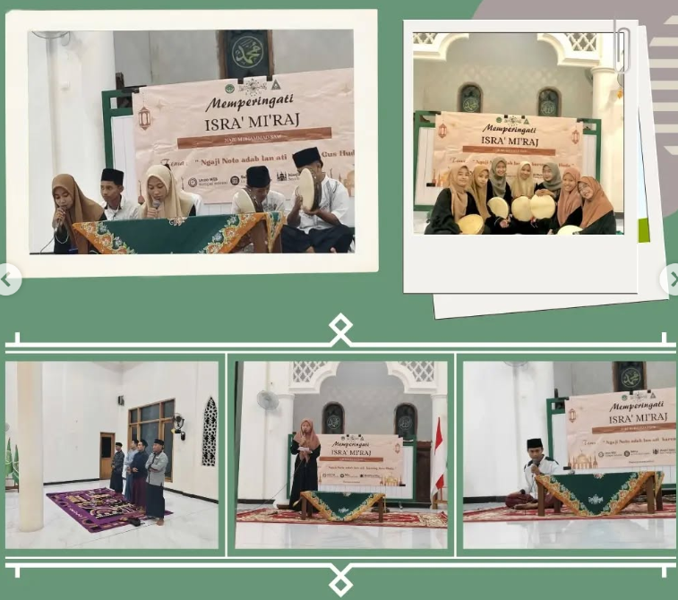 | |
| Tujuan | Memperdalam wawasan tentang Peristiwa isra mi'raj Nabi Muhammad Saw | |
| Target | Anggota Ipnu&Ippnu Ketambul dan Pk Mts Nurul Huda Ketambul |
| 3 | Kegiatan | Rangkaian Ramadhan |
|---|---|---|
| Konsep | (1. Khotmil Qur'an di 5 masjid berbeda) (Buka Bersama, Bagi-bai Takjil dan AKustik) | |
| Tanggal | 29-30 Maret 2024 | |
| Gambar | 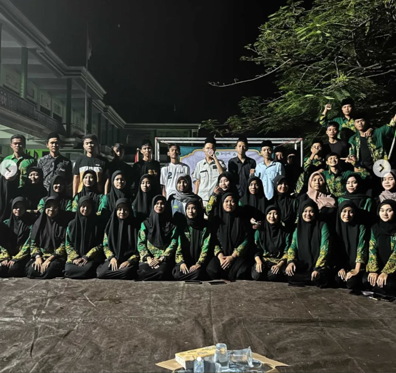 | |
| Tujuan | Mencitrakan Nama Ipnu&Ippnu di tengah tengah masyarakat dan mempererat hubungan antar anggota | |
| Target | Anggota dan Masyarakat |
| 4 | Kegiatan | Halal Bi Halal After Idul fitri |
|---|---|---|
| Tema | - | |
| Tanggal | Sabtu 13 April 2024 | |
| Gambar | 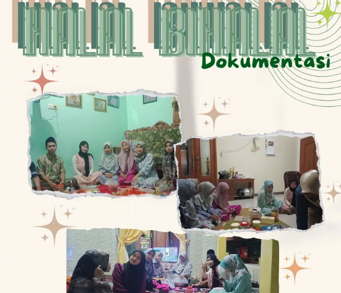 | |
| Tujuan | Mempererat hubungan antara anggota Organisasi dan tokoh masyarakat | |
| Target | Tokoh Masyarakat Ustadz Alumni dan Perangkat Desa |
| 5 | Kegiatan | Nobar Timnas u23 vs Uzbekistan dan vs Iaq |
|---|---|---|
| Tema | - | |
| Tanggal | 29 April & 2 mei 2024 | |
| Gambar | 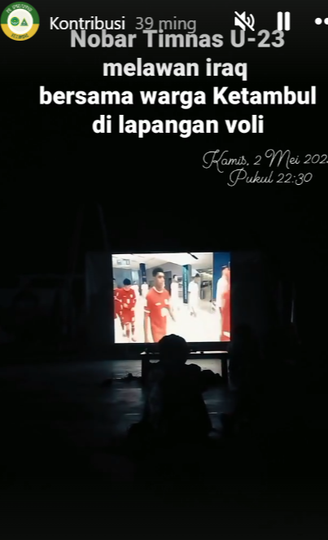 | |
| Tujuan | Menyatukan kegembiraan masyarakat | |
| Target | Masyarakat setempat |
| 6 | Kegiatan | Ziarah di Asmoro qondi |
|---|---|---|
| Tema | - | |
| Tanggal | Kamis 30 Mei 2024 | |
| Gambar | 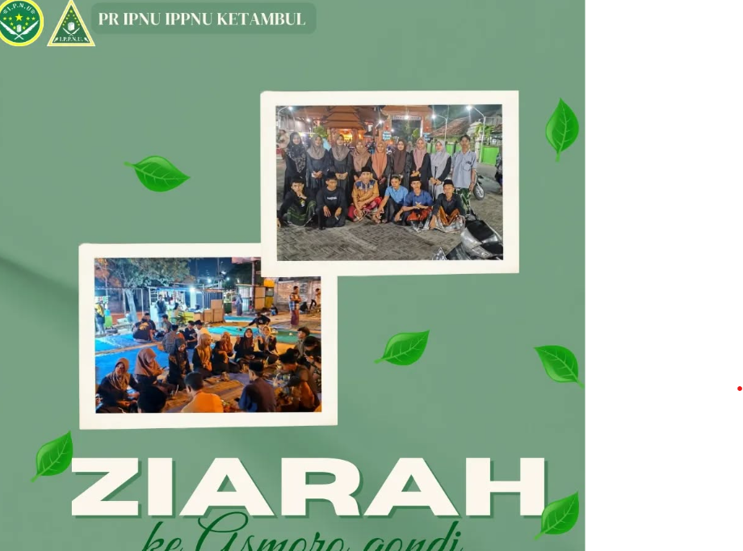 | |
| Tujuan | Mencari Barkah | |
| Target | Seluruh Anggota |
| 7 | Kegiatan | Diskusi dan Bakaran setelah Hari Raya Idul Adha |
|---|---|---|
| - | - | |
| Tanggal | Senin 17 Juni 2024 | |
| Gambar | 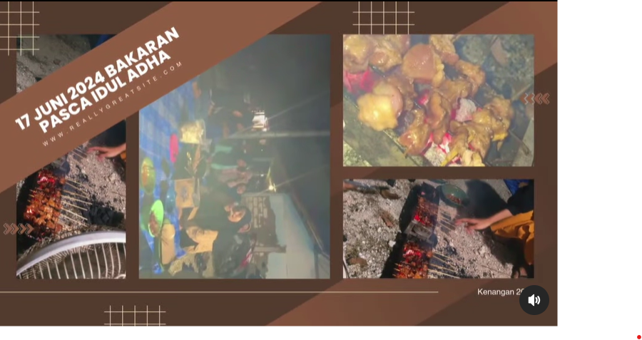 | |
| Tujuan | mempersolid antar anggota dan melatih kemampuan untuk berdiskusu secara prosedural | |
| Target | anggota |
| 8 | Kegiatan | Tuan Rumah Rutinan Zona Timur |
|---|---|---|
| Tema | - | |
| Tanggal | Minggu, 30 Juni 2024 | |
| Gambar | 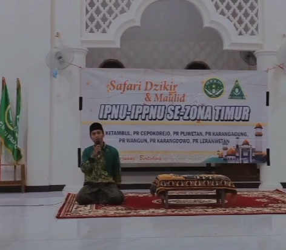 | |
| Tujuan | Mempererat silaturahim IPNU&IPPNU ZONA TIMUR (Palang) | |
| Target | Seluruh Anggota Ipnu&Ippnu se zona timur |
| 9 | Kontribusi | Haul Makam Desa Ketambul |
|---|---|---|
| Tanggal | Rabu 24 Juli 2024 | |
| Gambar | ||
| Target | Masyarakat setempat |
| 10 | Kontribusi | Porseni PAC IPNU&IPPNU PALANG |
|---|---|---|
| Tanggal | 29-31 Juli 2024 | |
| Gambar | 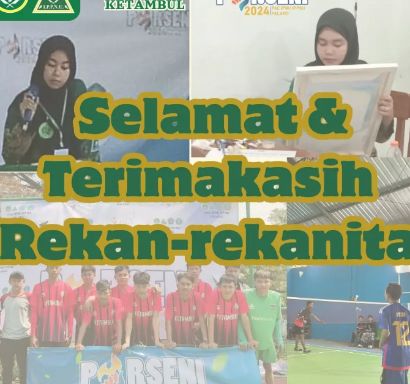 | |
| Tujuan | Melatih mental aggota dalam persaingan yang bersih | |
| Target | Seluruh Anggota |
| 11 | Kegiatan | Pawai Sepeda Hias |
|---|---|---|
| Tema | - | |
| Tanggal | Sabtu 27 Juli 2024 | |
| Gambar | 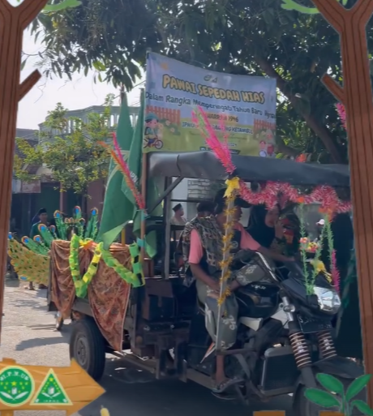 | |
| Tujuan | Mempererat tali silaturahmi antar TPQ se Desa Ketambul | |
| Target | Murid-murid TPQ Se Ketambul |
| 12 | Kegiatan | Forum Terbuka dalam rangka memperingati Maulid Nabi Muhammad |
|---|---|---|
| Tema | - | |
| Tanggal | Minggu 30 September 2024 | |
| Gambar | 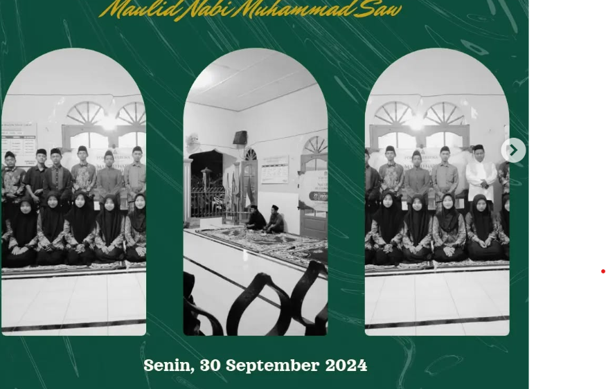 | |
| Tujuan | Melatih Critical Thinking Anggota | |
| Target | Seluruh Anggota & alumni |
| 13 | Kegiatan | Nobar Sang Kiai dalam rangka Hari Santri Nasional |
|---|---|---|
| Tema | - | |
| Tanggal | Kamis 24 Oktober 2024 | |
| Gambar | 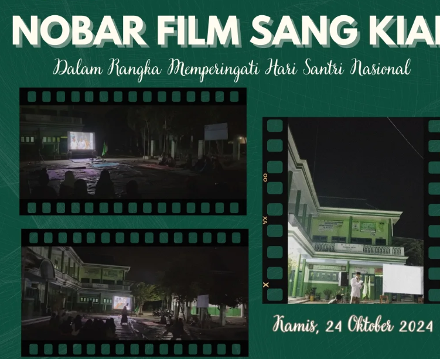 | |
| Tujuan | Meneladani perjuangan santri di masa penjajahan | |
| Target | Seluruh Anggota Ipnu&Ippnu dan Pk Mts Nurul Huda |
| 14 | Kegiatan | Visitasi oleh PAC |
|---|---|---|
| Tema | - | |
| Tanggal | Kamis 24 Oktober 2024 | |
| Gambar | 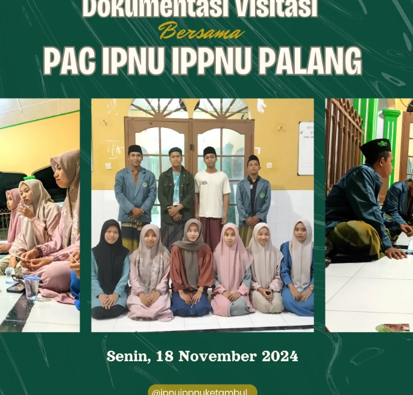 | |
| Tujuan | Peninjauan Kinerja | |
| Target | Pengurus |
| 15 | Kegiatan | Ziarah Wali Lokal Tuban |
|---|---|---|
| Tema | - | |
| Tanggal | KMInggu 29 Desember 2024 | |
| Gambar |  |
|
| Tujuan | Mencari Berkah | |
| Target | Seluruh Anggota Ipnu&Ippnu |